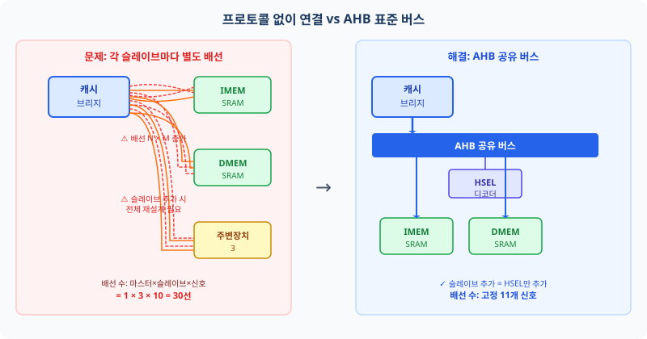
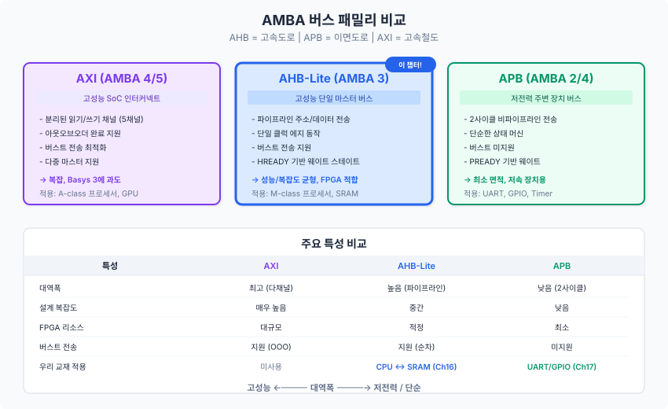
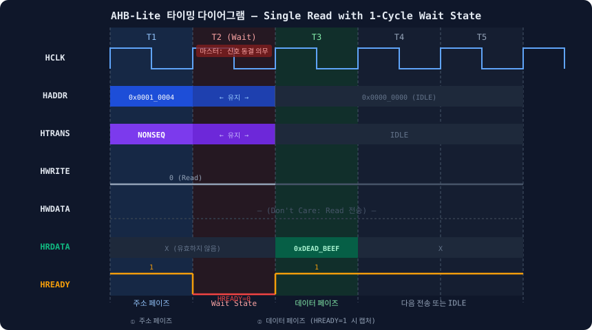
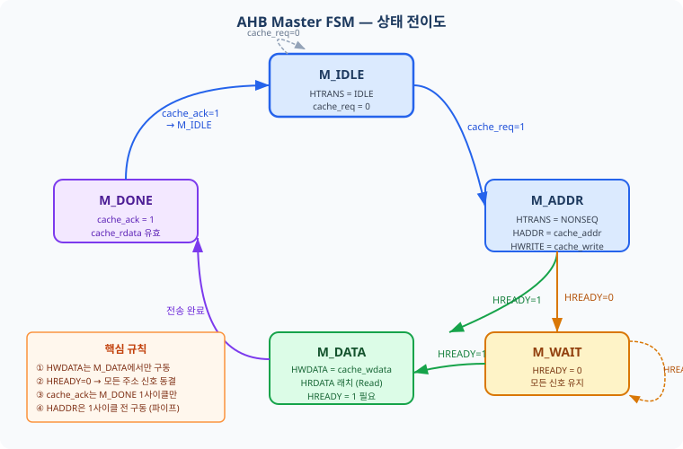
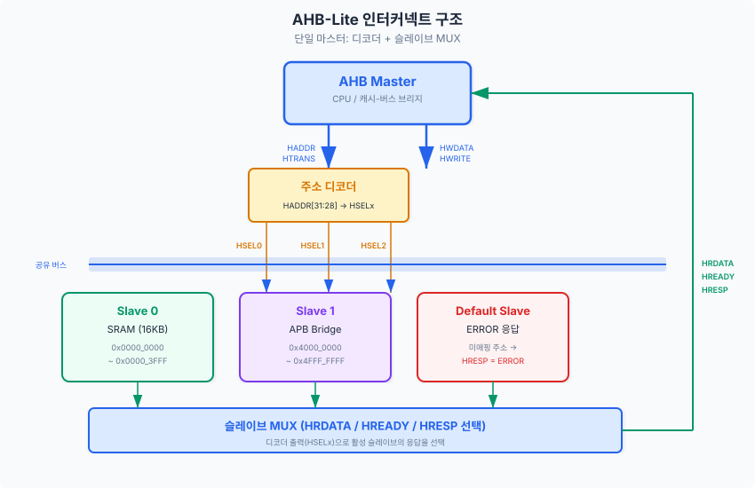

Ch15에서 우리는 I-Cache와 D-Cache를 Main SRAM에 연결하는 통합 메모리 컨트롤러를 완성하였습니다.
그 과정에서 mem_req, mem_ack, mem_addr 등의 자체 프로토콜을 사용하였는데,
이 프로토콜은 우리 프로젝트 내부에서만 통용되는 비표준 규약입니다.
실제 SoC(시스템 온 칩, System on Chip) 설계에서는 IP(지적 재산권 블록, Intellectual Property block)를 재사용하고
서로 다른 벤더의 모듈을 연결하기 위해 산업 표준 버스 프로토콜이 필수적입니다.
이 챕터에서는 ARM이 정의한 AMBA(고급 마이크로컨트롤러 버스 아키텍처, Advanced Microcontroller Bus Architecture) 표준 중
가장 널리 사용되는 AHB-Lite(고성능 버스 경량 버전, Advanced High-performance Bus Lite)를 학습하고,
Ch15의 자체 프로토콜 인터페이스를 AHB-Lite로 교체하여 산업 수준의 설계를 완성합니다.
Ch15의 통합 메모리 컨트롤러를 완성하면서 여러분은 한 가지 중요한 성취를 거뒀습니다.
I-Cache, D-Cache, SRAM이 mem_req/mem_ack/mem_addr/mem_rdata로
이루어진 자체 프로토콜로 통신하는 완결된 시스템을 만들었습니다.
그런데 잠시 실무 관점에서 생각해 봅시다.
여러분이 설계한 RISC-V 코어에 UART(범용 비동기 수신 송신기, Universal Asynchronous Receiver-Transmitter)를
추가하려면 어떻게 해야 할까요?
외부 벤더에서 구입한 IP는 mem_req/mem_ack를 전혀 모릅니다.
IP마다 서로 다른 인터페이스를 사용한다면, 연결할 때마다 맞춤형 변환 회로(글루 로직, Glue Logic)를 만들어야 합니다.
이 문제를 해결하기 위해 ARM은 1996년 AMBA 버스 표준을 공개하였습니다. AMBA는 공통 언어와 같습니다. 서울 사람과 부산 사람이 각자의 사투리로 대화하면 오해가 생기지만, 표준어를 사용하면 문제없이 소통할 수 있습니다. 마찬가지로 모든 IP가 AMBA 표준을 준수하면, 코어를 교체하거나 주변장치를 추가해도 재배선 없이 시스템을 조립할 수 있습니다.

Ch15에서 설계한 자체 프로토콜을 돌이켜 보면 다음과 같은 세 가지 구조적 한계가 있습니다. 첫째, 확장성 문제입니다. 슬레이브(주변장치)를 하나 추가할 때마다 마스터의 포트 목록에 새 신호 묶음을 추가해야 하고, 모든 연결 배선을 수동으로 변경해야 합니다. 둘째, 재사용성 문제입니다. 외부 IP를 구매하여 연결하려면 해당 IP가 제공하는 인터페이스를 우리 프로토콜로 변환하는 브리지 회로를 별도로 설계해야 합니다. 셋째, 검증 어려움입니다. 비표준 프로토콜은 공식 검증 도구나 SVA(시스템베릴로그 어서션, SystemVerilog Assertion) 라이브러리의 지원을 받기 어렵습니다.
이 챕터에서는 Ch15의 인터페이스를 AHB-Lite로 교체합니다. AHB-Lite는 단일 마스터(Single Master) 환경에서 사용하는 AHB의 경량화 버전으로, ARM IHI0033A 스펙에 정의되어 있습니다. Cortex-M 시리즈 마이크로컨트롤러의 내부 버스가 바로 이 AHB-Lite입니다. 우리의 RV32I 파이프라인 코어도 이 표준을 채택함으로써 실제 SoC 설계와 동일한 구조를 갖추게 됩니다.
AMBA 표준은 단 하나의 버스가 아닙니다. 시스템의 성능 요구사항과 복잡도에 따라 선택할 수 있는 버스 패밀리를 제공합니다. 그림 16-2는 세 가지 주요 버스의 포지셔닝을 보여줍니다.

APB(고급 주변장치 버스, Advanced Peripheral Bus)는 UART, GPIO, 타이머처럼 속도가 느린 주변장치에 적합한 단순한 버스입니다. Ch17에서 상세히 다룹니다. AHB-Lite는 메모리나 DMA처럼 고대역폭이 필요한 모듈에 적합하며, 단일 사이클 주소 페이즈와 파이프라인 구조가 특징입니다. AXI4(고급 확장 가능 인터페이스, Advanced eXtensible Interface 4)는 다중 마스터, 비순서 전송, 별도의 읽기/쓰기 채널을 지원하는 가장 강력한 버스입니다.
AHB-Lite 신호를 배우기 전에, Ch15의 자체 프로토콜 신호가 AHB 신호의 어떤 것에 대응하는지 먼저 파악하면 완전히 새로운 개념이 아니라 친숙한 개념의 표준화임을 이해할 수 있습니다.
| Ch15 신호 | AHB-Lite 신호 | 역할 | 방향 |
|---|---|---|---|
mem_req |
HTRANS[1] |
전송 요청 (NONSEQ=1, IDLE=0) | Master → Slave |
mem_addr[31:0] |
HADDR[31:0] |
32비트 바이트 주소 | Master → Slave |
mem_we |
HWRITE |
쓰기 인에이블 (1=Write, 0=Read) | Master → Slave |
mem_wdata[31:0] |
HWDATA[31:0] |
쓰기 데이터 | Master → Slave |
mem_rdata[31:0] |
HRDATA[31:0] |
읽기 데이터 | Slave → Master |
mem_ready |
HREADY |
슬레이브 준비 완료 (0=대기 요청) | Slave → Master |
| (없음) | HRESP |
오류 응답 (0=OKAY, 1=ERROR) | Slave → Master |
| (없음) | HSIZE[2:0] |
전송 크기 (3'b010=32비트 워드) | Master → Slave |
| (없음) | HBURST[2:0] |
버스트 타입 (3'b000=SINGLE) | Master → Slave |
AHB-Lite의 신호를 기능에 따라 세 그룹으로 나누어 이해하면 외우기 쉽습니다.
그룹 A — 주소 및 제어 신호 (Master → Slave):
HCLK는 버스 클록으로, 모든 신호의 기준입니다.
HRESETn은 액티브 로우(Active-Low) 리셋으로, 0일 때 모든 버스 상태가 초기화됩니다.
HADDR[31:0]은 32비트 바이트 주소입니다.
HTRANS[1:0]은 전송 타입으로, 다음 절에서 상세히 다룹니다.
HSIZE[2:0]는 전송 크기를 나타내며 3'b000=Byte, 3'b001=Halfword, 3'b010=Word(32비트)입니다.
HBURST[2:0]는 버스트 타입으로 3'b000=SINGLE, 3'b011=INCR4, 3'b101=INCR8 등이 있습니다.
HWRITE는 1이면 Write, 0이면 Read 방향을 나타냅니다.
그룹 B — 데이터 신호:
HWDATA[31:0]는 마스터가 구동하는 쓰기 데이터이며,
HRDATA[31:0]는 슬레이브가 구동하는 읽기 데이터입니다.
이 두 신호는 방향이 반대임에 주의합니다.
그룹 C — 흐름 제어 신호 (Slave → Master):
HREADY는 슬레이브가 LOW를 구동하여 마스터에게 "아직 준비되지 않았으니 대기하라"고 알립니다.
HRESP는 오류 응답 신호로, 0=OKAY(정상), 1=ERROR(오류)입니다.
본 설계에서는 항상 OKAY를 응답합니다.
AHB에서 마스터가 버스를 사용할 때는 반드시 HTRANS[1:0]으로
현재 전송의 성격을 알려야 합니다. 이것은 마치 도로에서 방향 지시등을 켜는 것과 같습니다.
HTRANS는 네 가지 값을 가집니다.
미리 알고 보기: 이 챕터의 기본 예제에서는 NONSEQ와 IDLE만 사용합니다. BUSY와 SEQ는 INCR4/INCR8 버스트 전송에서 사용되는데, 이는 연습문제 4번에서 다룹니다. 지금은 네 가지 인코딩 값과 이름만 파악하면 충분합니다.
| 값 | 이름 | 의미 | 사용 시점 |
|---|---|---|---|
2'b00 |
IDLE | 버스 미사용 | 전송 없음. 슬레이브는 응답 불필요 |
2'b01 |
BUSY | 버스트 중 일시 중지 | 버스트 전송 도중 마스터가 잠시 쉴 때 |
2'b10 |
NONSEQ | 새 전송 시작 | 단일 전송 또는 버스트의 첫 번째 비트 |
2'b11 |
SEQ | 순차 버스트 전송 | INCR4/INCR8 버스트의 2번째 이후 전송 |
| ※ 본 챕터(단일 전송)에서는 NONSEQ와 IDLE만 사용합니다. BUSY와 SEQ는 INCR4/INCR8 버스트 전송(연습문제 4번, Ch20 심화)에서 사용됩니다. 지금은 인코딩 값과 이름만 파악하면 충분합니다. | |||
이 챕터의 기본 예제에서는 NONSEQ와 IDLE만 사용합니다. 단일 읽기 또는 쓰기 전송은 항상 NONSEQ 1회, 그 다음 IDLE로 돌아오는 패턴입니다. INCR4, INCR8 등의 버스트 전송에서 SEQ가 사용되는 것은 연습문제 4번에서 다룹니다.
AHB에서 가장 중요하고 처음에 가장 헷갈리는 부분이 바로 주소 페이즈(Address Phase)와 데이터 페이즈(Data Phase)가 1사이클 오버랩된다는 점입니다. Ch09에서 배운 파이프라인 레지스터를 기억하십시오. IF 스테이지에서 명령어를 읽는 동시에 ID 스테이지에서 이전 명령어를 디코딩합니다. AHB도 마찬가지입니다.
마스터는 T1 사이클에 주소와 제어 신호(HADDR, HTRANS, HWRITE 등)를 구동합니다. 슬레이브는 T1에서 이 정보를 래치하여 내부 동작을 준비합니다. 그리고 T2 사이클(또는 그 이후)에 실제 데이터(HWDATA 또는 HRDATA)가 교환됩니다. 즉, HWDATA는 HADDR보다 정확히 1사이클 늦게 구동됩니다. 이것이 바로 AHB의 1사이클 파이프라인 규칙이며, 이를 어기면 슬레이브가 잘못된 데이터를 캡처하는 치명적 오류(Critical 오류)가 발생합니다.

그림 16-3을 단계별로 읽어 봅시다.
T1 (주소 페이즈):
마스터가 HADDR=0x0001_0004, HTRANS=NONSEQ(2'b10), HWRITE=0(Read)를 구동합니다.
슬레이브는 이 정보를 내부 래치에 저장하고 읽기 동작을 시작합니다.
이 사이클에서 HREADY=1이므로 마스터는 T1이 수용되었음을 압니다.
T2 (Wait State):
슬레이브가 아직 데이터 준비가 되지 않아 HREADY=0을 구동합니다.
마스터는 이를 보고 HADDR, HTRANS, HWRITE 등 주소 페이즈 신호를 T1과 동일하게 유지해야 합니다.
이것이 마스터의 의무입니다. 신호를 변경하면 슬레이브가 주소를 잘못 인식합니다.
HWDATA는 Read 전송이므로 Don't Care입니다.
T3 (데이터 페이즈):
슬레이브가 HREADY=1을 구동하고 HRDATA=0xDEAD_BEEF를 유효한 값으로 올립니다.
마스터는 HREADY=1을 감지한 후 HRDATA를 캡처하여 캐시 미스 처리를 완료합니다.
동시에 다음 전송의 주소를 구동하거나 HTRANS=IDLE로 버스를 해제할 수 있습니다.
고속도로에서 고속버스와 일반 승용차가 함께 달리는 상황을 생각해 봅시다.
고속버스는 70km/h, 승용차는 100km/h로 달릴 수 있습니다.
승용차가 고속버스 뒤에 붙었다면 잠시 속도를 줄여야 합니다.
AHB의 Wait State가 바로 이와 같습니다.
마스터(승용차, 100MHz 코어)보다 슬레이브(고속버스, 느린 SRAM)가 느릴 때,
슬레이브가 HREADY=0을 구동하여 마스터에게 "속도를 줄여라"고 신호합니다.
HREADY=0을 수신한 마스터는 다음을 반드시 준수해야 합니다. 이를 어기는 것은 AHB 스펙 위반이며 회로 오동작의 직접 원인이 됩니다.
| 신호 | 마스터 의무 | 이유 |
|---|---|---|
HADDR[31:0] |
이전 값 유지 (변경 금지) | 슬레이브가 주소를 재샘플링할 수 있음 |
HTRANS[1:0] |
이전 값 유지 (변경 금지) | 전송 타입 변경 금지 |
HSIZE[2:0] |
이전 값 유지 (변경 금지) | 전송 크기 변경 금지 |
HWRITE |
이전 값 유지 (변경 금지) | 읽기/쓰기 방향 변경 금지 |
HWDATA[31:0] |
이전 값 유지 (변경 금지) | 슬레이브가 데이터를 캡처할 준비 중 |
HBURST[2:0] |
이전 값 유지 (변경 금지) | 버스트 타입 변경 금지 |
요약하면, HREADY=0인 동안에는 마스터가 구동하는 모든 신호가 동결(Freeze)됩니다. 마스터 FSM은 이 조건에서 현재 상태를 유지하며 출력을 변경해서는 안 됩니다. 다음 절에서 살펴볼 AHB Master FSM의 M_WAIT 상태가 이 역할을 담당합니다.
실제 시스템에서 HREADY는 인터커넥트(Interconnect)가 여러 슬레이브의 HREADY를 취합하여 마스터에게 전달합니다. 어떤 슬레이브가 선택되었느냐에 따라 해당 슬레이브의 HREADY가 마스터의 HREADY 입력으로 전달됩니다. 단, 이때 1사이클 지연이 발생합니다. 인터커넥트는 현재 사이클의 HSEL이 아닌 1사이클 지연된 HSEL_d를 기준으로 HRDATA MUX를 선택합니다. 이것이 데이터 페이즈와 주소 페이즈의 타이밍 차이를 올바르게 처리하는 핵심입니다.
이제 실제 SystemVerilog 코드로 AHB Master 브리지를 구현합니다.
이 모듈은 Ch15의 캐시 인터페이스(cache_req, cache_addr 등)와
AHB-Lite 버스 사이의 프로토콜 변환기 역할을 합니다.

FSM은 다섯 가지 상태로 구성됩니다.
M_IDLE: 캐시 요청이 없는 초기 상태. HTRANS=IDLE을 구동합니다.
M_ADDR: 캐시 요청 수신 시 진입. HADDR, HTRANS=NONSEQ, HWRITE를 구동합니다. 이것이 주소 페이즈입니다.
M_WAIT: M_ADDR 이후 HREADY=0이면 진입. 모든 신호를 동결합니다.
M_DATA: HREADY=1이 되면 진입. Write이면 HWDATA를 구동하고, Read이면 HRDATA를 캡처합니다.
M_DONE: 전송 완료 후 1사이클 동안 cache_ack=1을 출력하고 M_IDLE로 복귀합니다.
// ============================================================
// ahb_master_bridge.sv
// AHB-Lite Master FSM — 캐시 인터페이스 ↔ AHB-Lite 프로토콜 변환기
// ARM IHI0033A 스펙 기반 AHB-Lite (단일 마스터)
// ============================================================
module ahb_master_bridge (
// 시스템 클록 및 리셋
input logic HCLK, // AHB 버스 클록
input logic HRESETn, // 액티브 로우 리셋
// 캐시 인터페이스 (Ch15 프로토콜)
input logic cache_req, // 전송 요청
input logic cache_write, // 1=쓰기, 0=읽기
input logic [31:0] cache_addr, // 요청 주소
input logic [31:0] cache_wdata, // 쓰기 데이터
output logic cache_ack, // 전송 완료 확인
output logic [31:0] cache_rdata, // 읽기 데이터
// AHB-Lite 마스터 출력 (Master → Slave 방향)
output logic [31:0] HADDR, // 32비트 바이트 주소
output logic [1:0] HTRANS, // 전송 타입
output logic [2:0] HSIZE, // 전송 크기 (3'b010 = 32비트 고정)
output logic [2:0] HBURST, // 버스트 타입 (3'b000 = SINGLE)
output logic HWRITE, // 1=Write, 0=Read
output logic [31:0] HWDATA, // 쓰기 데이터
// AHB-Lite 슬레이브 입력 (Slave → Master 방향)
input logic [31:0] HRDATA, // 읽기 데이터
input logic HREADY, // 슬레이브 준비 완료
input logic HRESP // 오류 응답 (0=OKAY, 1=ERROR)
);
// ---- FSM 상태 인코딩 ----
typedef enum logic [2:0] {
M_IDLE = 3'b000, // 유휴 상태
M_ADDR = 3'b001, // 주소 페이즈
M_WAIT = 3'b010, // Wait State (HREADY=0)
M_DATA = 3'b011, // 데이터 페이즈
M_DONE = 3'b100 // 완료 (cache_ack=1)
} ahb_state_t;
ahb_state_t state, next_state;
// ---- 주소 페이즈 정보 래치 ----
// HREADY=0 동안 신호를 유지하기 위해 래치
logic [31:0] addr_lat; // 래치된 주소
logic write_lat; // 래치된 쓰기 방향
logic [31:0] wdata_lat; // 래치된 쓰기 데이터
// ---- AHB 전송 타입 파라미터 ----
localparam logic [1:0] HTRANS_IDLE = 2'b00;
localparam logic [1:0] HTRANS_BUSY = 2'b01;
localparam logic [1:0] HTRANS_NONSEQ = 2'b10;
localparam logic [1:0] HTRANS_SEQ = 2'b11;
// ---- 상태 레지스터 (순차 로직) ----
always_ff @(posedge HCLK or negedge HRESETn) begin
if (!HRESETn) begin
state <= M_IDLE;
addr_lat <= 32'h0;
write_lat <= 1'b0;
wdata_lat <= 32'h0;
end else begin
state <= next_state;
// M_IDLE → M_ADDR 전이 결정 사이클에 래치
// (HREADY 조건 제거 — M_IDLE 마지막 사이클에서 캡처하므로
// 이후 M_ADDR에서 HREADY=0이 되어 M_WAIT으로 전이되어도 올바른 값 보유)
if (state == M_IDLE && cache_req) begin
addr_lat <= cache_addr;
write_lat <= cache_write;
wdata_lat <= cache_wdata;
end
end
end
// ---- 읽기 데이터 캡처 (HREADY=1일 때만) ----
always_ff @(posedge HCLK or negedge HRESETn) begin
if (!HRESETn) begin
cache_rdata <= 32'h0;
end else if ((state == M_DATA || state == M_WAIT) && HREADY) begin
// HREADY=1 상승 후 HRDATA 캡처 (Read 전송만)
if (!write_lat)
cache_rdata <= HRDATA;
end
end
// ---- 다음 상태 로직 (조합 로직) ----
always_comb begin
next_state = state;
case (state)
M_IDLE: begin
if (cache_req)
next_state = M_ADDR;
end
M_ADDR: begin
// HREADY=1이면 데이터 페이즈로 진입
// HREADY=0이면 Wait State에서 대기
if (HREADY)
next_state = M_DATA;
else
next_state = M_WAIT;
end
M_WAIT: begin
// HREADY가 HIGH가 될 때까지 대기
if (HREADY)
next_state = M_DATA;
end
M_DATA: begin
// HREADY=1일 때만 완료 전이 (슬레이브가 추가 Wait을 요청할 수 있음)
if (HREADY)
next_state = M_DONE;
// HREADY=0이면 M_DATA 유지 (HWDATA 동결)
end
M_DONE: begin
// cache_ack 1사이클 후 복귀
next_state = M_IDLE;
end
default: next_state = M_IDLE;
endcase
end
// ---- 출력 로직 (Moore FSM) ----
always_comb begin
// 기본값 (안전한 초기값)
HADDR = 32'h0;
HTRANS = HTRANS_IDLE;
HSIZE = 3'b010; // 항상 32비트 워드
HBURST = 3'b000; // 항상 SINGLE
HWRITE = 1'b0;
HWDATA = 32'h0;
cache_ack = 1'b0;
case (state)
M_IDLE: begin
HTRANS = HTRANS_IDLE;
end
M_ADDR: begin
// 주소 페이즈: 주소와 제어 신호 구동
HADDR = cache_addr;
HTRANS = HTRANS_NONSEQ;
HWRITE = cache_write;
end
M_WAIT: begin
// HREADY=0 — 신호 동결 (래치 값 사용)
// 핵심: addr_lat, write_lat를 그대로 구동
HADDR = addr_lat;
HTRANS = HTRANS_NONSEQ; // 전송 취소 금지
HWRITE = write_lat;
HWDATA = wdata_lat; // Write이면 데이터도 유지
end
M_DATA: begin
// 데이터 페이즈: HWDATA 구동 (Write 전송만)
// HRDATA 캡처는 always_ff에서 처리
HTRANS = HTRANS_IDLE; // 다음 전송 없음
HWDATA = wdata_lat; // Write 시 데이터 구동
end
M_DONE: begin
cache_ack = 1'b1; // 완료 신호
HTRANS = HTRANS_IDLE;
end
default: begin
HTRANS = HTRANS_IDLE;
end
endcase
end
endmodule
AHB 버스에서 슬레이브의 역할은 마스터로부터 주소와 제어 신호를 받아 실제 메모리 동작을 수행하는 것입니다.
SRAM 슬레이브의 핵심 동작은 다음과 같습니다.
주소 래치: 주소 페이즈(HSEL && HTRANS[1] && HREADY_in 조건)에서 주소와 제어 정보를 내부 레지스터에 래치합니다.
쓰기: 데이터 페이즈에서 HWDATA를 래치된 주소의 메모리에 기록합니다.
읽기: 래치된 주소의 메모리 값을 HRDATA로 출력합니다(조합 논리 또는 레지스터).
Wait State: 처리 시간이 필요하면 HREADY_out=0을 구동합니다.
슬레이브는 3상태 FSM으로 Wait State를 관리합니다.
S_IDLE: 평상 시 유휴 상태입니다. 유효한 전송이 감지되면(valid_transfer=1) S_WAIT으로 진입합니다. WAIT_CYCLES=0이면 S_IDLE을 유지하고 HREADY_out=1을 바로 구동합니다.
S_WAIT: HREADY_out=0을 구동하여 마스터를 정지시킵니다. wait_cnt가 WAIT_CYCLES-1에 도달하면 S_DONE으로 전이합니다.
S_DONE: HREADY_out=1을 구동합니다. 이 사이클에 마스터가 HRDATA를 캡처하거나 슬레이브가 HWDATA를 기록하고, 슬레이브는 S_IDLE로 복귀합니다.
// ============================================================
// ahb_sram_slave.sv
// AHB-Lite SRAM 슬레이브 — 32워드 예시 (실제로는 파라미터로 확장)
// ============================================================
module ahb_sram_slave #(
parameter MEM_DEPTH = 32, // 메모리 깊이 (워드 단위)
parameter WAIT_CYCLES = 1 // HREADY=0 구간 사이클 수 (0이면 즉시 응답)
// 실제 총 지연 = WAIT_CYCLES + 1 (S_DONE 사이클 포함)
) (
// AHB 시스템 신호
input logic HCLK,
input logic HRESETn,
// AHB 슬레이브 인터페이스
input logic HSEL, // 슬레이브 선택 (인터커넥트가 구동)
input logic [31:0] HADDR, // 주소
input logic [1:0] HTRANS, // 전송 타입
input logic [2:0] HSIZE, // 전송 크기
input logic HWRITE, // 쓰기 방향
input logic [31:0] HWDATA, // 쓰기 데이터
input logic HREADY_in, // 이전 슬레이브의 HREADY (인터커넥트에서)
output logic [31:0] HRDATA, // 읽기 데이터
output logic HREADY_out, // 준비 완료 신호
output logic HRESP // 오류 응답 (항상 OKAY)
);
// ---- SRAM 배열 ----
// 합성 시 BRAM으로 매핑될 수 있도록 동기 쓰기
logic [31:0] mem [0:MEM_DEPTH-1];
// ---- 주소 페이즈 래치 ----
logic [31:0] addr_lat; // 래치된 워드 주소
logic write_lat; // 래치된 쓰기 방향
logic sel_lat; // 래치된 슬레이브 선택
// 유효한 전송 감지: HSEL=1 AND HTRANS[1]=1 AND HREADY_in=1
// HTRANS[1]=1 이면 NONSEQ 또는 SEQ (실제 전송)
// IDLE(2'b00) 및 BUSY(2'b01)는 HTRANS[1]=0이므로 무시
wire valid_transfer = HSEL && HTRANS[1] && HREADY_in;
// ---- 주소 페이즈 래치 (순차 로직) ----
always_ff @(posedge HCLK or negedge HRESETn) begin
if (!HRESETn) begin
addr_lat <= 32'h0;
write_lat <= 1'b0;
sel_lat <= 1'b0;
end else if (HREADY_in) begin
// HREADY_in=1일 때만 주소 페이즈 정보 갱신
addr_lat <= HADDR[31:2]; // 워드 정렬 (하위 2비트 무시)
write_lat <= HWRITE;
sel_lat <= valid_transfer;
end
end
// ---- Wait State FSM ----
// WAIT_CYCLES=1이면 S_WAIT(1사이클) + S_DONE(1사이클) = 총 2사이클 지연
// (HREADY_out=0 구간은 WAIT_CYCLES 사이클, HREADY_out=1로 올리는 S_DONE 1사이클 별도)
logic [$clog2(WAIT_CYCLES+2):0] wait_cnt;
typedef enum logic [1:0] { S_IDLE, S_WAIT, S_DONE } wait_state_t;
wait_state_t wstate, next_wstate;
always_ff @(posedge HCLK or negedge HRESETn) begin
if (!HRESETn) begin
wstate <= S_IDLE;
wait_cnt <= '0;
end else begin
wstate <= next_wstate;
if (wstate == S_WAIT)
wait_cnt <= wait_cnt + 1;
else
wait_cnt <= '0;
end
end
always_comb begin
case (wstate)
S_IDLE: next_wstate = (valid_transfer && WAIT_CYCLES > 0) ? S_WAIT : S_IDLE;
S_WAIT: next_wstate = (wait_cnt >= WAIT_CYCLES - 1) ? S_DONE : S_WAIT;
S_DONE: next_wstate = S_IDLE;
default: next_wstate = S_IDLE;
endcase
end
// ---- HREADY_out 생성 ----
// 기본적으로 HIGH, Wait State 삽입 시 LOW
assign HREADY_out = (wstate != S_WAIT);
assign HRESP = 1'b0; // 항상 OKAY
// ---- 메모리 초기화 (시뮬레이션 전용) ----
// 합성 도구는 initial 블록을 무시함 — Basys 3 BRAM 초기화는 $readmemh 사용 권장
initial begin
for (int i = 0; i < MEM_DEPTH; i++) mem[i] = 32'h0;
end
// ---- 쓰기 동작 (동기 로직) ----
// 데이터 페이즈에서 HWDATA를 메모리에 기록
// HREADY_out=1 AND write_lat=1 AND sel_lat=1 조건
always_ff @(posedge HCLK) begin
if (sel_lat && write_lat && HREADY_out) begin
mem[addr_lat[($clog2(MEM_DEPTH)-1):0]] <= HWDATA;
end
end
// ---- 읽기 동작 (조합 로직) ----
// 래치된 주소에서 데이터를 즉시 출력
// 합성 시 비동기 읽기 LUTRAM 또는 등록 없는 BRAM 출력으로 매핑
assign HRDATA = (sel_lat && !write_lat)
? mem[addr_lat[($clog2(MEM_DEPTH)-1):0]]
: 32'h0;
endmodule
마스터와 슬레이브를 설계했다면, 이제 둘을 연결하는 인터커넥트(Interconnect)가 필요합니다. 인터커넥트의 역할은 세 가지입니다. 첫째, 마스터의 주소를 보고 어떤 슬레이브를 선택할지 결정하는 HSEL 디코더. 둘째, 선택된 슬레이브의 HRDATA를 마스터에게 전달하는 HRDATA MUX. 셋째, 선택된 슬레이브의 HREADY를 마스터에게 전달하는 HREADY MUX.

인터커넥트 설계에서 가장 중요한 미묘한 점은 HRDATA MUX가 1사이클 지연된 HSEL_d를 사용한다는 것입니다. 그 이유는 AHB의 파이프라인 구조 때문입니다. T1 사이클에 마스터가 HADDR=0x0001_0004를 구동하면, T1에서 HSEL_dmem=1이 됩니다. 그런데 슬레이브가 실제로 HRDATA를 구동하는 것은 T2(또는 그 이후)입니다. 따라서 T2에서 인터커넥트가 올바른 HRDATA를 선택하려면, T1의 HSEL 정보(즉, 1사이클 지연된 HSEL_d)를 사용해야 합니다. 현재 사이클의 HSEL을 사용하면 T1에서의 데이터가 T1에 읽혀야 하는 오류가 발생합니다.
// ============================================================
// ahb_interconnect.sv
// AHB-Lite 인터커넥트 — HSEL 디코더 + HRDATA/HREADY MUX
// ============================================================
module ahb_interconnect (
input logic HCLK,
input logic HRESETn,
// 마스터 인터페이스
input logic [31:0] HADDR,
input logic [1:0] HTRANS,
input logic [2:0] HSIZE,
input logic [2:0] HBURST,
input logic HWRITE,
input logic [31:0] HWDATA,
output logic [31:0] HRDATA, // MUX 출력
output logic HREADY, // 선택된 슬레이브 HREADY
output logic HRESP,
// 슬레이브 0 — IMEM SRAM (0x0000_0000 ~ 0x0000_FFFF)
output logic HSEL_imem,
input logic [31:0] HRDATA_imem,
input logic HREADY_imem,
input logic HRESP_imem,
// 슬레이브 1 — DMEM SRAM (0x0001_0000 ~ 0x0001_FFFF)
output logic HSEL_dmem,
input logic [31:0] HRDATA_dmem,
input logic HREADY_dmem,
input logic HRESP_dmem,
// 슬레이브 2 — APB Bridge (0xFFFF_0000 ~ 0xFFFF_FFFF, Ch17 예약)
output logic HSEL_apb,
input logic [31:0] HRDATA_apb,
input logic HREADY_apb,
input logic HRESP_apb
);
// ---- 주소 디코더 (조합 로직) ----
// 각 슬레이브의 주소 범위에 따라 HSEL 생성
always_comb begin
HSEL_imem = (HADDR[31:16] == 16'h0000); // 0x0000_xxxx
HSEL_dmem = (HADDR[31:16] == 16'h0001); // 0x0001_xxxx
HSEL_apb = (HADDR[31:16] == 16'hFFFF); // 0xFFFF_xxxx
end
// ---- HSEL 1사이클 지연 레지스터 ----
// 데이터 페이즈에서 올바른 슬레이브를 선택하기 위해 사용
// HREADY=1인 사이클에서만 갱신 (Wait State 도중 변경 방지)
logic hsel_imem_d, hsel_dmem_d, hsel_apb_d;
always_ff @(posedge HCLK or negedge HRESETn) begin
if (!HRESETn) begin
hsel_imem_d <= 1'b0;
hsel_dmem_d <= 1'b0;
hsel_apb_d <= 1'b0;
end else if (HREADY) begin
// HREADY=1인 사이클에만 현재 HSEL을 래치
hsel_imem_d <= HSEL_imem && HTRANS[1];
hsel_dmem_d <= HSEL_dmem && HTRANS[1];
hsel_apb_d <= HSEL_apb && HTRANS[1];
end
end
// ---- HRDATA MUX (1사이클 지연 HSEL_d 사용) ----
always_comb begin
if (hsel_imem_d) HRDATA = HRDATA_imem;
else if (hsel_dmem_d) HRDATA = HRDATA_dmem;
else if (hsel_apb_d) HRDATA = HRDATA_apb;
else HRDATA = 32'h0;
end
// ---- HREADY MUX (현재 사이클 HSEL 사용) ----
// HREADY는 현재 진행 중인 전송의 슬레이브 준비 여부를 반영
// 주의: 이 HREADY MUX는 단일 전송(NONSEQ→IDLE) 패턴에만 올바르게 동작합니다.
// 연속 전송(back-to-back NONSEQ) 또는 버스트 전송 시에는
// hsel_imem_d/hsel_dmem_d 기반의 HREADY MUX로 변경해야 합니다.
always_comb begin
if (HSEL_imem && HTRANS[1]) HREADY = HREADY_imem;
else if (HSEL_dmem && HTRANS[1]) HREADY = HREADY_dmem;
else if (HSEL_apb && HTRANS[1]) HREADY = HREADY_apb;
else HREADY = 1'b1; // IDLE 상태: HREADY=1
end
// ---- HRESP MUX ----
always_comb begin
if (hsel_imem_d) HRESP = HRESP_imem;
else if (hsel_dmem_d) HRESP = HRESP_dmem;
else if (hsel_apb_d) HRESP = HRESP_apb;
else HRESP = 1'b0; // OKAY
end
// ---- HREADY_in을 모든 슬레이브에 전달 ----
// 인터커넥트의 HREADY를 슬레이브의 HREADY_in으로 연결
// (Top-level 연결에서 처리 — 아래 ahb_top.sv 참조)
endmodule
마스터, 슬레이브, 인터커넥트를 개별적으로 설계하였습니다. 이제 세 모듈을 하나의 시스템으로 연결하고 시뮬레이션으로 동작을 검증합니다. 테스트벤치는 두 가지 기본 시나리오를 수행하고, SVA(시스템베릴로그 어서션, SystemVerilog Assertion) 3종으로 프로토콜 준수 여부를 자동 점검합니다.
// ============================================================
// ahb_tb.sv
// AHB-Lite 시스템 통합 테스트벤치
// ============================================================
`timescale 1ns/1ps
module ahb_tb;
// ---- 클록 및 리셋 ----
logic HCLK, HRESETn;
// AHB 버스 신호 (마스터 → 인터커넥트 → 슬레이브)
logic [31:0] HADDR;
logic [1:0] HTRANS;
logic [2:0] HSIZE, HBURST;
logic HWRITE;
logic [31:0] HWDATA;
logic [31:0] HRDATA;
logic HREADY;
logic HRESP;
// 캐시 인터페이스 (DUT 입력)
logic cache_req, cache_write;
logic [31:0] cache_addr, cache_wdata;
logic cache_ack;
logic [31:0] cache_rdata;
// HSEL 및 슬레이브 신호
logic HSEL_imem, HSEL_dmem, HSEL_apb;
logic [31:0] HRDATA_imem, HRDATA_dmem, HRDATA_apb;
logic HREADY_imem, HREADY_dmem, HREADY_apb;
logic HRESP_imem, HRESP_dmem, HRESP_apb;
// ---- DUT 인스턴스 ----
ahb_master_bridge u_master (
.HCLK (HCLK),
.HRESETn (HRESETn),
.cache_req (cache_req),
.cache_write (cache_write),
.cache_addr (cache_addr),
.cache_wdata (cache_wdata),
.cache_ack (cache_ack),
.cache_rdata (cache_rdata),
.HADDR (HADDR),
.HTRANS (HTRANS),
.HSIZE (HSIZE),
.HBURST (HBURST),
.HWRITE (HWRITE),
.HWDATA (HWDATA),
.HRDATA (HRDATA),
.HREADY (HREADY),
.HRESP (HRESP)
);
ahb_interconnect u_ic (
.HCLK (HCLK), .HRESETn (HRESETn),
.HADDR (HADDR), .HTRANS (HTRANS),
.HSIZE (HSIZE), .HBURST (HBURST),
.HWRITE (HWRITE), .HWDATA (HWDATA),
.HRDATA (HRDATA), .HREADY (HREADY),
.HRESP (HRESP),
.HSEL_imem (HSEL_imem), .HRDATA_imem(HRDATA_imem),
.HREADY_imem (HREADY_imem),.HRESP_imem (HRESP_imem),
.HSEL_dmem (HSEL_dmem), .HRDATA_dmem(HRDATA_dmem),
.HREADY_dmem (HREADY_dmem),.HRESP_dmem (HRESP_dmem),
.HSEL_apb (HSEL_apb), .HRDATA_apb (HRDATA_apb),
.HREADY_apb (HREADY_apb), .HRESP_apb (HRESP_apb)
);
// IMEM Slave (주소: 0x0000_xxxx, Wait=1)
ahb_sram_slave #(.MEM_DEPTH(256), .WAIT_CYCLES(1)) u_imem (
.HCLK (HCLK), .HRESETn (HRESETn),
.HSEL (HSEL_imem), .HADDR (HADDR),
.HTRANS (HTRANS), .HSIZE (HSIZE),
.HWRITE (HWRITE), .HWDATA (HWDATA),
.HREADY_in (HREADY),
.HRDATA (HRDATA_imem),.HREADY_out (HREADY_imem),
.HRESP (HRESP_imem)
);
// DMEM Slave (주소: 0x0001_xxxx, Wait=1)
ahb_sram_slave #(.MEM_DEPTH(256), .WAIT_CYCLES(1)) u_dmem (
.HCLK (HCLK), .HRESETn (HRESETn),
.HSEL (HSEL_dmem), .HADDR (HADDR),
.HTRANS (HTRANS), .HSIZE (HSIZE),
.HWRITE (HWRITE), .HWDATA (HWDATA),
.HREADY_in (HREADY),
.HRDATA (HRDATA_dmem),.HREADY_out (HREADY_dmem),
.HRESP (HRESP_dmem)
);
// APB Bridge 자리 비우기 (Ch17에서 연결)
assign HRDATA_apb = 32'h0;
assign HREADY_apb = 1'b1;
assign HRESP_apb = 1'b0;
// ---- 클록 생성 (10ns = 100MHz) ----
initial HCLK = 0;
always #5 HCLK = ~HCLK;
// ---- 테스트 시나리오 ----
task automatic ahb_write(
input logic [31:0] addr,
input logic [31:0] data
);
@(posedge HCLK);
cache_req = 1'b1;
cache_write = 1'b1;
cache_addr = addr;
cache_wdata = data;
// cache_ack를 기다림
@(posedge cache_ack);
@(posedge HCLK);
cache_req = 1'b0;
$display("[WRITE] addr=0x%08h data=0x%08h OK", addr, data);
endtask
task automatic ahb_read(
input logic [31:0] addr,
output logic [31:0] rdata
);
@(posedge HCLK);
cache_req = 1'b1;
cache_write = 1'b0;
cache_addr = addr;
cache_wdata = 32'h0;
@(posedge cache_ack);
rdata = cache_rdata;
@(posedge HCLK);
cache_req = 1'b0;
$display("[READ ] addr=0x%08h data=0x%08h", addr, rdata);
endtask
logic [31:0] read_data;
initial begin
// 리셋
HRESETn = 1'b0;
cache_req = 1'b0;
cache_write = 1'b0;
cache_addr = 32'h0;
cache_wdata = 32'h0;
repeat(4) @(posedge HCLK);
HRESETn = 1'b1;
repeat(2) @(posedge HCLK);
$display("=== 시나리오 1: DMEM Single Write ===");
ahb_write(32'h0001_0000, 32'hDEAD_BEEF);
$display("=== 시나리오 2: DMEM Single Read ===");
ahb_read(32'h0001_0000, read_data);
// 검증
if (read_data === 32'hDEAD_BEEF)
$display("[PASS] 읽기 데이터 일치: 0x%08h", read_data);
else
$display("[FAIL] 기대 0xDEAD_BEEF, 실제 0x%08h", read_data);
$display("=== 시나리오 3: IMEM Read (0x0000_0000) ===");
ahb_read(32'h0000_0000, read_data);
$display("[INFO] IMEM[0] = 0x%08h", read_data);
repeat(4) @(posedge HCLK);
$display("=== 시뮬레이션 완료 ===");
$finish;
end
// ---- SVA (SystemVerilog Assertion) 3종 ----
// 시뮬레이션 환경에서만 컴파일
`ifdef SIMULATION
// SVA 1: HREADY=0 동안 마스터는 HADDR를 변경하지 않아야 함
// (주소 페이즈 또는 Wait State에서)
// |-> (overlapping): 현재 사이클에 선행 조건이 참이면 현재 사이클에 후행 조건도 참이어야 함
// AHB 스펙: HREADY=0인 바로 그 사이클에 HADDR가 이미 안정적이어야 함
property p_addr_stable_on_wait;
@(posedge HCLK) disable iff (!HRESETn)
(HTRANS[1] && !HREADY) |-> $stable(HADDR);
endproperty
assert property (p_addr_stable_on_wait)
else $error("[SVA FAIL] HREADY=0인데 HADDR이 변경되었습니다!");
// SVA 2: HREADY=0 동안 HTRANS는 변경되지 않아야 함
// |-> (overlapping): 현재 사이클에 선행 조건 참 → 현재 사이클에 후행 조건도 참
property p_htrans_stable_on_wait;
@(posedge HCLK) disable iff (!HRESETn)
(HTRANS[1] && !HREADY) |-> $stable(HTRANS);
endproperty
assert property (p_htrans_stable_on_wait)
else $error("[SVA FAIL] HREADY=0인데 HTRANS가 변경되었습니다!");
// SVA 3: HRESP=ERROR이면 반드시 2사이클 동안 유지되어야 함
// (AHB 스펙: ERROR 응답은 2사이클 프로토콜)
property p_error_two_cycle;
@(posedge HCLK) disable iff (!HRESETn)
(HRESP && !HREADY) |=> (HRESP && HREADY);
endproperty
assert property (p_error_two_cycle)
else $error("[SVA FAIL] HRESP ERROR 2사이클 프로토콜 위반!");
`endif // SIMULATION
endmodule
이 챕터에서 학습한 내용을 정리합니다.
| 개념 | 핵심 내용 |
|---|---|
| AHB-Lite 채택 이유 | 자체 프로토콜의 확장성·재사용성 한계 해결. ARM IHI0033A 표준으로 IP 간 호환성 확보 |
| 11개 핵심 신호 | 주소/제어(A그룹): HCLK, HRESETn, HADDR, HTRANS, HSIZE, HBURST, HWRITE / 데이터(B): HWDATA, HRDATA / 흐름제어(C): HREADY, HRESP |
| HTRANS 4종 | IDLE(2'b00), BUSY(2'b01), NONSEQ(2'b10), SEQ(2'b11) |
| 1사이클 파이프라인 | HWDATA는 HADDR보다 정확히 1사이클 늦게 구동. 주소 페이즈(T1)와 데이터 페이즈(T2)가 1사이클 오버랩 |
| HREADY=0 의무 | 마스터는 HADDR, HTRANS, HSIZE, HWRITE, HWDATA를 모두 변경 없이 유지해야 함 |
| Master FSM | M_IDLE → M_ADDR → M_WAIT(HREADY=0) 또는 M_DATA(HREADY=1) → M_DONE |
| Slave 래치 조건 | HSEL && HTRANS[1] && HREADY_in — 세 조건 모두 확인 필수 |
| HRDATA MUX | 1사이클 지연된 HSEL_d 사용 (파이프라인 타이밍 보정) |
이 챕터에서 설계한 인터커넥트의 APB Bridge 슬레이브(0xFFFF_0000~FFFF)는 아직 비어 있습니다. AHB는 고속 메모리 접근에 최적화되어 있지만, UART나 GPIO처럼 속도가 느린 주변장치를 직접 AHB에 연결하면 느린 주변장치가 버스를 오래 점유하여 메모리 접근 성능을 저하시키는 문제가 발생합니다. 이것이 바로 APB(고급 주변장치 버스, Advanced Peripheral Bus)가 탄생한 이유입니다. APB는 AHB보다 훨씬 단순한 인터페이스로 저속 주변장치를 연결하며, AHB-APB 브리지가 두 버스 사이의 프로토콜 변환을 담당합니다. Ch17에서는 APB를 학습하고 UART IP를 연결하여 RISC-V 코어에서 "Hello, RISC-V!"를 시리얼 단자로 전송하는 실습을 진행합니다.
| 신호 | T1 | T2 | T3(IDLE) |
|---|---|---|---|
| HTRANS | ① ( ) | IDLE | IDLE |
| HADDR | 0x0001_0008 | 0x0000_0000 | - |
| HWRITE | 1 | 0 | - |
| HWDATA | ② ( ) | ③ ( ) | - |
| HREADY | 1 | ④ ( ) | 1 |
ahb_master_bridge.sv의 FSM에 INCR4 버스트 지원을 추가하십시오.
INCR4는 NONSEQ 1회 + SEQ 3회로 구성됩니다.
cache_req와 함께 cache_burst(1비트, 1=INCR4) 입력을 추가하고,
버스트 카운터를 구현하십시오.
ahb_sram_slave.sv의 WAIT_CYCLES 파라미터를 수정하지 않고,
슬레이브가 항상 2사이클 Wait을 삽입하도록 별도의 서브모듈
ahb_sram_slave_2wait.sv를 작성하십시오.
이때 Wait State FSM의 상태 인코딩과 전이 조건을 타이밍 다이어그램과 함께 설명하십시오.
지금 당장 전부 이해하지 않아도 됩니다. 각 절 학습 후 참조용으로 활용하세요. 코드는 SystemVerilog IEEE 1800-2017 표준을 준수하며, 들여쓰기 3칸·snake_case·한국어 주석 규칙을 적용하였습니다.
// ============================================================
// ahb_master_bridge.sv — 전체 코드 (16.5절과 동일)
// AHB-Lite Master FSM, 캐시-AHB 브리지
// ============================================================
module ahb_master_bridge (
input logic HCLK, HRESETn,
input logic cache_req, cache_write,
input logic [31:0] cache_addr, cache_wdata,
output logic cache_ack,
output logic [31:0] cache_rdata,
output logic [31:0] HADDR,
output logic [1:0] HTRANS,
output logic [2:0] HSIZE, HBURST,
output logic HWRITE,
output logic [31:0] HWDATA,
input logic [31:0] HRDATA,
input logic HREADY, HRESP
);
typedef enum logic [2:0] {
M_IDLE=3'b000, M_ADDR=3'b001, M_WAIT=3'b010,
M_DATA=3'b011, M_DONE=3'b100
} ahb_state_t;
ahb_state_t state, next_state;
logic [31:0] addr_lat;
logic write_lat;
logic [31:0] wdata_lat;
localparam logic [1:0] HTRANS_IDLE = 2'b00;
localparam logic [1:0] HTRANS_NONSEQ = 2'b10;
always_ff @(posedge HCLK or negedge HRESETn) begin
if (!HRESETn) begin
state <= M_IDLE; addr_lat <= '0; write_lat <= '0; wdata_lat <= '0;
end else begin
state <= next_state;
if (state == M_IDLE && cache_req) begin
addr_lat <= cache_addr; write_lat <= cache_write; wdata_lat <= cache_wdata;
end
end
end
always_ff @(posedge HCLK or negedge HRESETn) begin
if (!HRESETn) cache_rdata <= '0;
else if ((state == M_DATA || state == M_WAIT) && HREADY && !write_lat)
cache_rdata <= HRDATA;
end
always_comb begin
next_state = state;
case (state)
M_IDLE: if (cache_req) next_state = M_ADDR;
M_ADDR: next_state = HREADY ? M_DATA : M_WAIT;
M_WAIT: if (HREADY) next_state = M_DATA;
M_DATA: if (HREADY) next_state = M_DONE;
M_DONE: next_state = M_IDLE;
default: next_state = M_IDLE;
endcase
end
always_comb begin
HADDR=32'h0; HTRANS=HTRANS_IDLE; HSIZE=3'b010; HBURST=3'b000;
HWRITE=1'b0; HWDATA=32'h0; cache_ack=1'b0;
case (state)
M_ADDR: begin HADDR=cache_addr; HTRANS=HTRANS_NONSEQ; HWRITE=cache_write; end
M_WAIT: begin HADDR=addr_lat; HTRANS=HTRANS_NONSEQ; HWRITE=write_lat; HWDATA=wdata_lat; end
M_DATA: begin HTRANS=HTRANS_IDLE; HWDATA=wdata_lat; end
M_DONE: begin cache_ack=1'b1; HTRANS=HTRANS_IDLE; end
default:;
endcase
end
endmodule
// ============================================================
// ahb_sram_slave.sv — 전체 코드 (16.6절과 동일)
// AHB-Lite SRAM 슬레이브, 파라미터화 설계
// ============================================================
module ahb_sram_slave #(
parameter MEM_DEPTH = 32,
parameter WAIT_CYCLES = 1
) (
input logic HCLK, HRESETn,
input logic HSEL,
input logic [31:0] HADDR,
input logic [1:0] HTRANS,
input logic [2:0] HSIZE,
input logic HWRITE,
input logic [31:0] HWDATA,
input logic HREADY_in,
output logic [31:0] HRDATA,
output logic HREADY_out,
output logic HRESP
);
logic [31:0] mem [0:MEM_DEPTH-1];
logic [31:0] addr_lat;
logic write_lat, sel_lat;
wire valid_transfer = HSEL && HTRANS[1] && HREADY_in;
always_ff @(posedge HCLK or negedge HRESETn) begin
if (!HRESETn) begin
addr_lat <= '0; write_lat <= '0; sel_lat <= '0;
end else if (HREADY_in) begin
addr_lat <= HADDR[31:2];
write_lat <= HWRITE;
sel_lat <= valid_transfer;
end
end
logic [$clog2(WAIT_CYCLES+2):0] wait_cnt;
typedef enum logic [1:0] { S_IDLE, S_WAIT, S_DONE } wait_state_t;
wait_state_t wstate, next_wstate;
always_ff @(posedge HCLK or negedge HRESETn) begin
if (!HRESETn) begin wstate <= S_IDLE; wait_cnt <= '0; end
else begin
wstate <= next_wstate;
wait_cnt <= (wstate == S_WAIT) ? wait_cnt + 1 : '0;
end
end
always_comb begin
case (wstate)
S_IDLE: next_wstate = (valid_transfer && WAIT_CYCLES > 0) ? S_WAIT : S_IDLE;
S_WAIT: next_wstate = (wait_cnt >= WAIT_CYCLES - 1) ? S_DONE : S_WAIT;
S_DONE: next_wstate = S_IDLE;
default: next_wstate = S_IDLE;
endcase
end
assign HREADY_out = (wstate != S_WAIT);
assign HRESP = 1'b0;
initial begin
for (int i = 0; i < MEM_DEPTH; i++) mem[i] = 32'h0;
end
always_ff @(posedge HCLK) begin
if (sel_lat && write_lat && HREADY_out)
mem[addr_lat[($clog2(MEM_DEPTH)-1):0]] <= HWDATA;
end
assign HRDATA = (sel_lat && !write_lat)
? mem[addr_lat[($clog2(MEM_DEPTH)-1):0]] : 32'h0;
endmodule
// ============================================================
// ahb_interconnect.sv — 전체 코드 (16.7절과 동일)
// HSEL 디코더 + HRDATA/HREADY MUX
// ============================================================
module ahb_interconnect (
input logic HCLK, HRESETn,
input logic [31:0] HADDR,
input logic [1:0] HTRANS,
input logic [2:0] HSIZE, HBURST,
input logic HWRITE,
input logic [31:0] HWDATA,
output logic [31:0] HRDATA,
output logic HREADY, HRESP,
output logic HSEL_imem,
input logic [31:0] HRDATA_imem,
input logic HREADY_imem, HRESP_imem,
output logic HSEL_dmem,
input logic [31:0] HRDATA_dmem,
input logic HREADY_dmem, HRESP_dmem,
output logic HSEL_apb,
input logic [31:0] HRDATA_apb,
input logic HREADY_apb, HRESP_apb
);
always_comb begin
HSEL_imem = (HADDR[31:16] == 16'h0000);
HSEL_dmem = (HADDR[31:16] == 16'h0001);
HSEL_apb = (HADDR[31:16] == 16'hFFFF);
end
logic hsel_imem_d, hsel_dmem_d, hsel_apb_d;
always_ff @(posedge HCLK or negedge HRESETn) begin
if (!HRESETn) begin hsel_imem_d <= '0; hsel_dmem_d <= '0; hsel_apb_d <= '0; end
else if (HREADY) begin
hsel_imem_d <= HSEL_imem && HTRANS[1];
hsel_dmem_d <= HSEL_dmem && HTRANS[1];
hsel_apb_d <= HSEL_apb && HTRANS[1];
end
end
always_comb begin
if (hsel_imem_d) HRDATA = HRDATA_imem;
else if (hsel_dmem_d) HRDATA = HRDATA_dmem;
else if (hsel_apb_d) HRDATA = HRDATA_apb;
else HRDATA = 32'h0;
end
always_comb begin
if (HSEL_imem && HTRANS[1]) HREADY = HREADY_imem;
else if (HSEL_dmem && HTRANS[1]) HREADY = HREADY_dmem;
else if (HSEL_apb && HTRANS[1]) HREADY = HREADY_apb;
else HREADY = 1'b1;
end
always_comb begin
if (hsel_imem_d) HRESP = HRESP_imem;
else if (hsel_dmem_d) HRESP = HRESP_dmem;
else if (hsel_apb_d) HRESP = HRESP_apb;
else HRESP = 1'b0;
end
endmodule
// ============================================================
// ahb_tb.sv — 전체 코드 (16.8절과 동일)
// AHB-Lite 시스템 통합 테스트벤치 + SVA 3종
// ============================================================
// (16.8절의 전체 코드 참조 — 위 ahb_tb.sv와 동일)
// 시뮬레이션 실행: vcs -sverilog -debug_access+all ahb_tb.sv +define+SIMULATION
// 또는 Vivado: add_files {ahb_master_bridge.sv ahb_sram_slave.sv ahb_interconnect.sv ahb_tb.sv}
// set_property top ahb_tb [get_filesets sim_1]
// launch_simulation